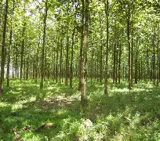

In May, a human-caused wildfire raised serious ecological concerns after it burned over one-third of Santa Rosa Island — an offshore wildlife oasis in Southern California’s Channel Islands National Park. Concerns have turned into somber truths on the windswept island, which emerges from the ocean about 26 miles off the mainland, and hosts flora and fauna found nowhere else on Earth.
The wildfire, the largest in the park’s history, devastated a critically endangered grove of Santa Rosa Island Torrey pine trees — some of the rarest pines in the world — according to recent federal damage assessments on the island.
Some trees died immediately, the assessments found, but the long-term outlook is even more bleak: 60% to 80% of the trees are predicted to die based on the extent of the damage, Ana Cholo, a National Park Service spokesperson, told CNN. Only 2% of the grove was unburned, she added. “Because Torrey pines are not well adapted to fire, even low-severity burns may result in delayed mortality,” Cholo said. “A detailed assessment is underway, and the full extent of impacts may not be known for at least a year.”
The loss could have trickle-down effects on the island. These scaly, contorted pines, positioned on sandstone bluffs above the sea, catch fog with their needles, funneling water to their roots as well as neighboring plants and animals.
“Plants like this affect local water availability and can make a huge difference in terms of how much water is captured by life on the ground,” Heather Schneider, the director of conservation and research at Santa Barbara Botanic Garden, told CNN.
Get the top stories delivered to your inbox every morning
Sign-up HERE
corection:An earlier version of this article stated that the park would cover eight acres twelve acres. The Daily Beacon Regrets the error
Our Story
Contact Us
Privacy Policy
Newsroom
FAQ
Terms Of Use
Careers
Support
Cookie Policy
2026 The Daily Beacon.All Right Reserved.